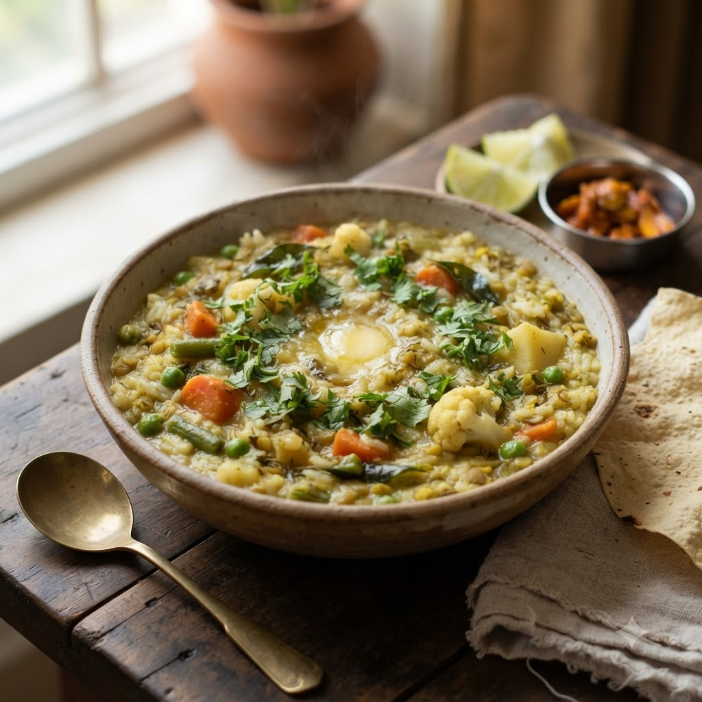

Vegetable Khichdi

Vegetable Khichdi
Chef Magic – Sauté + Boil Auto 28 min — Serves 4
Prep ahead: Wash and soak rice and dal together for 18 minutes for a softer, quicker-cooking khichdi.
Ingredients
- 1/2 cup rice
- 1/2 cup moong dal
- 1 cup mixed vegetables, chopped
- 1 tsp cumin seeds (jeera)
- 1/2 tsp turmeric (haldi)
- 1 tbsp ghee
- 3.5 cups water
- Salt to taste
Method
1Add ghee and cumin seeds to the jar; select Sauté (Speed 2–4, ~130–160°C) for 2 minutes until fragrant.
2Add rice, dal, vegetables, turmeric and salt; sauté briefly to combine.
3Pour in water, select Boil (Speed 1–2, 100°C) and cook until rice and dal are soft and mushy.
4Stir well and serve hot with a dollop of ghee.